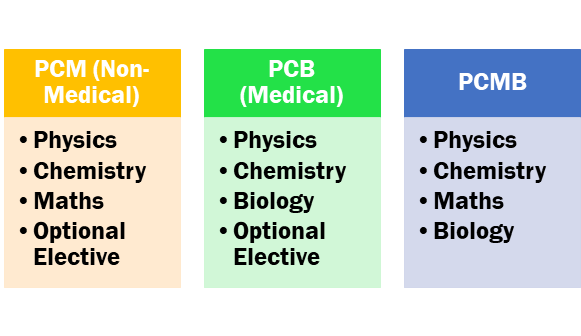

Science Stream
What is Science Stream?
The Science stream is one of the most popular educational tracks chosen by students after 10th grade. It focuses on subjects like Physics, Chemistry, Biology, and Mathematics. This stream is designed for students who have a keen interest in understanding the world around them, whether it's the physical laws of nature or the complexities of life forms. Science students gain a deep understanding of scientific concepts that can lead to various career opportunities in fields such as engineering, medicine, research, and technology.
Key Skills Required in Science Stream
Students pursuing the Science stream should have strong analytical and problem-solving skills. A good grasp of mathematics and logical reasoning is essential for subjects like Physics and Mathematics. Science students also need to be detail-oriented and curious about how things work in the natural world. Having a passion for discovery and experimentation is key in research-related careers. Time management and the ability to work with complex concepts are also important skills to excel in this stream.
Popular Career Options in Science Stream
There are several career options for students who graduate from the Science stream. One of the most sought-after paths is engineering, where students can specialize in various fields such as computer science, civil, mechanical, or electrical engineering. Medicine is another prominent career choice, with fields such as MBBS, nursing, pharmacy, and dentistry. Science students can also pursue careers in research, biotechnology, environmental science, or space technology. Many students choose to enter the IT and software industry due to the growing demand for skilled professionals in these sectors.
Career Opportunities After Science Stream
After completing their education in the Science stream, students can pursue higher studies in fields like engineering, medical science, pure sciences (Physics, Chemistry, Biology), or computer science. Many opt for professional courses like B.Tech, MBBS, BDS, or Pharmacy. For those interested in research, there are opportunities in various industries, government agencies, or academic institutions. Careers in biotechnology, genetic engineering, and environmental science are also growing fields. Students can also explore roles in data science, AI, or robotics as technology continues to advance.
How to Pursue a Career in Science Stream?
To pursue a career in the Science stream, students typically need to select subjects like Physics, Chemistry, Biology, and Mathematics in their senior secondary education (11th and 12th grades). After completing school, they can opt for undergraduate courses in specialized fields like B.Tech, MBBS, or B.Sc. It's crucial for students to perform well in entrance exams (such as JEE for engineering or NEET for medical) to get admission into top institutions. Internships, research projects, and participation in science fairs or workshops can help students gain practical experience and exposure in their chosen field.
Challenges in Science Stream
While the Science stream offers numerous career opportunities, it also comes with its own set of challenges. The subjects can be difficult and require a high level of understanding and attention to detail. Students need to manage their time efficiently to balance the workload of practicals, assignments, and exams. The pressure to perform well in competitive exams such as JEE, NEET, or GATE can be overwhelming. Moreover, the cost of pursuing higher education in specialized fields like medicine or engineering can also be a financial challenge for some students.
Future Trends in Science Career Fields
The future of careers in the Science stream is promising, with advancements in fields like Artificial Intelligence, Data Science, Biotechnology, and Space Research. Careers related to renewable energy, environmental science, and health technologies are expected to grow due to global concerns about climate change and public health. With the rapid development of technology, fields like robotics, automation, and cyber security are becoming increasingly popular. Students in the Science stream should stay updated on these emerging trends to remain competitive in the job market.
Importance of Internships and Research Experience
Internships and research experience are crucial for Science students looking to gain practical knowledge and stand out in their chosen field. Internships provide students with hands-on experience in laboratories, hospitals, research centers, or companies. They help students apply theoretical knowledge to real-world scenarios, develop technical skills, and build professional networks. Research experience, particularly for those interested in academia or scientific innovation, can significantly enhance a student's credentials and open doors for postgraduate studies and career opportunities in research institutions.
How to Achieve Your Goals
- Choose PCM for engineering or PCB for medicine.
- Prepare for exams like JEE, NEET, or state-level tests.
- Develop problem-solving and analytical skills through regular practice.
Future Jobs and Opportunities
- Engineering: Software Developer, Civil Engineer.
- Medicine: Doctor, Pharmacist, Surgeon.
- Technology: Data Scientist, AI Specialist.